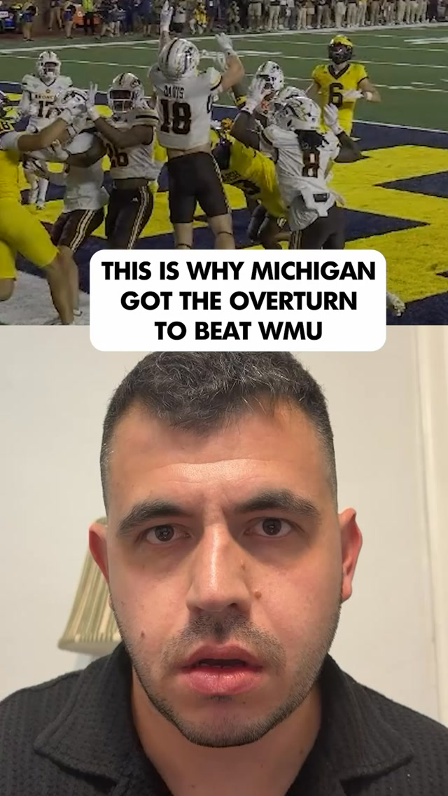
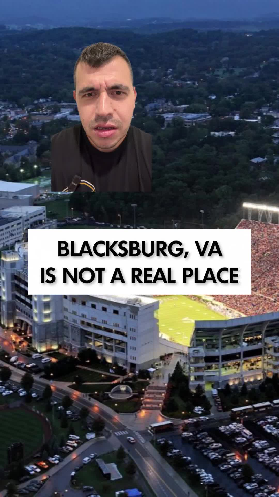
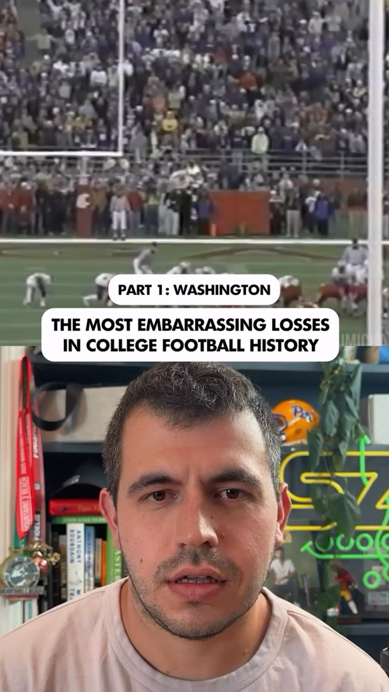
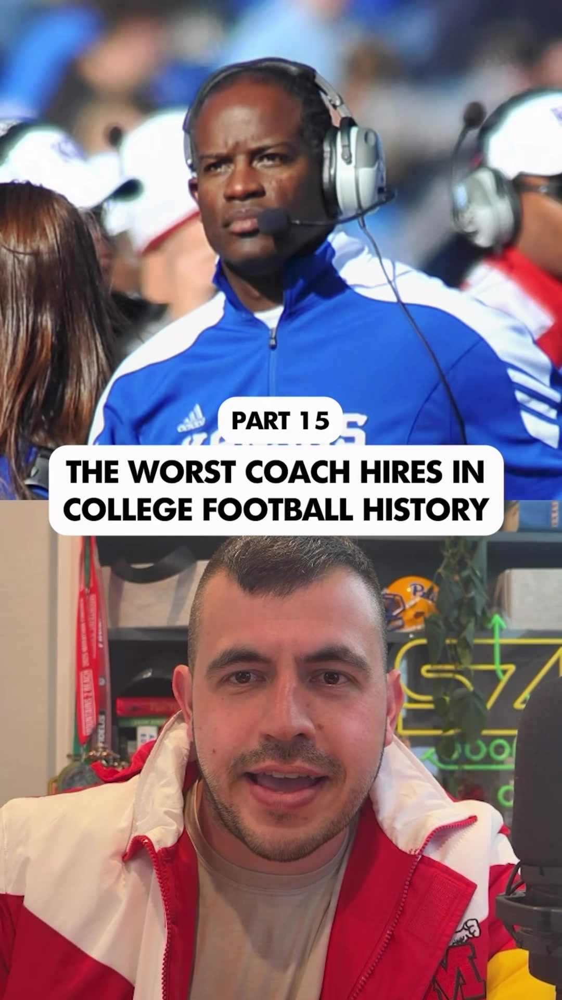

Writing · Podcasting · Social video
Alex
Kirshner.
I write about sports and non-sports. I co-host Split Zone Duo, a national college football podcast, and I spend lots of time making social media connections.
Work with meOn your screen
Social video
Instagram Whose clock is wrong: NBC or the Big Ten?
TikTok 3–5 hours from literally everywhere.
Instagram The 2008 Apple Cup, an all-time embarrassment.
TikTok Sorry, Jayhawks.More on Instagram @akirshner ↗ and TikTok @alex_kirshner ↗.
Selected writing
-
The Steelers' Post–Mike Tomlin Psychology Experiment
The Ringer, January 2026
-
A.I. Tools All Use the Same Sparkly Icon. That's a Surprisingly Big Problem.
Slate, December 2025
-
Caitlin Clark Is Just The Beginning
The Atlantic, March 2024
-
F1 Commentator Martin Brundle on Inventing the Grid Walk, Driving Legendary Cars, and Why the Sport Should Always Be a Little Scary
GQ, August 2022
-
Which Home Runs Violated Baseball's Unwritten Rules The Most?
FiveThirtyEight, June 2021
-
How Offshore Oddsmakers Made a Killing off Gullible Trump Supporters
Slate, December 2020
More writing by publication
Co-founder & co-host
A national college football podcast. Independent, in depth, and available wherever you listen or watch.
Reaching 15,000 downloaders per episode.
Work with me on the podcast, on social media, or both.
Let’s talk partnershipsAn occasional email
Keep in touch.
I promise to be kind to your inbox.
Assignments · Sponsorships · Social partnerships